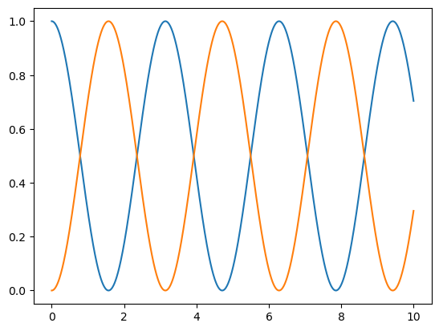

Tutorial

Ejemplo
Estudiedmos la evolución temporal de un estado \(\mathbf{y}(t)\) igual a una matriz 2x2 que corresponde a algún operador lineal. La función que describe la dinámica del problema es $$ f(t, \mathbf{y}) = -{\rm{i}} [\mathbf{O}, \mathbf{y}(t)], $$
- Con \(\mathbf{O}\) un operador lineal
- Con \({\rm{i}}\) la constante compleja
- Con \([A, B] = AB - BA\) una operación de conmutación
En Python, la constante compleja se denota mediante:
iConst = 1.0j
print(iConst)
1j
La función del problema dinámico depende del operador \(\mathbf{O}\). Escojamos el siguiente operador:
oOper = np.array([[0, 1], [1, 0]])
print(oOper)
[[0 1] [1 0]]
Seguidamente definimos un estado inicial. Consideremos:
yInit = np.array([[1, 0], [0, 0]])
print(yInit)
[[1 0] [0 0]]
Dado que el operador \(\mathbf{O}\) no es diagonal, esperamos que conforme avanza el tiempo, dicho operador modifique el estado \(\mathbf{y}(t)\).
Implementemos la función \(f(t, \mathbf{y})\) en Python.
def dyn_generator(oper, state):
return -iConst*(np.dot(oper,state)-np.dot(state,oper))
Ahora implementamos la función que realiza la operación dinámica del método RK4:
def rk4(func, oper, state, h):
k1=h*func(oper, state)
k2=h*func(oper, state+ 0.5*k1)
k3=h*func(oper, state+ 0.5*k2)
k4=h*func(oper, state+ k3)
return state+(1/6)*(k1+2*k2+2*k3+k4)
Utilizando la función np.linspace para crear un arreglo de valores temporales, evaluamos la dinamica temporal en una grilla unidimensional.
times= np.linspace(0,10.0, 1020)
[0.00000000e+00 9.81354269e-03 1.96270854e-02 ... 9.98037291e+00 9.99018646e+00 1.00000000e+01]
Esto genrará un arreglo de 1020 valores desde 0 a 10 separados por un mismo valor h:
h=times[1]-times[0]
0.009813542688910697
Creamos un ciclo para evaluar el métod y observar la evolución temporal. Primero, necesitamos una copia del operador que representa el estado inicial. Esto se puede hacer con el método copy() del módulo numpy:
yCopy = yInit.copy()
Finalmente, llamamos de manera iterativa rk4(), calculando el operador del estado del sistema \(\mathbf{y}(t)\) a través del tiempo. A travéz del tiempo, vamos a guardar la entrada \((0, 0)\) y \((1, 1)\) de la matriz \(\mathbf{y}(t)\).
Para esto, vamos a inicializar dos arreglos que van a contener los valores con valores iniciales cero. Utilizamos el mismo tamaño del arreglo que contiene la variable independiente temporal:
stateQuant00 = np.zeros(times.size)
stateQuant11 = np.zeros(times.size)
Ahora ya podemos iterar sobre `rk4()` para observar la evolución temporal.
for tt in range(times.size):
# Guardamos el valor de las entradas (0,0) y (1,1) en los arreglos que definidos anteriormente: stateQuant00 y stateQuant11
stateQuant00[tt]=yInit[0,0].real
stateQuant11[tt]=yInit[1,1].real
# Invocamos rk4 operando sobre yInit, esto devuelve un nuevo yN
yN=rk4(dyn_generator, oOper, yInit,h)
# Ahora asignamos yN a yInit
# De esta manera, en la siguiente iteración, el operador de esta iteración se convierte en el inicial
yInit = yN
Vamos a observar estos resutados:
stateQuand00 = [1. 0.9999037 0.99961483 ... 0.72179771 0.71296039 0.70404104]
stateQuand11 = [0.00000000e+00 9.63025285e-05 3.85173017e-04 ... 2.78202287e-01 2.87039605e-01 2.95958958e-01]
- recordemos que estos arreglos tienen el tamaño de 1020 entradas
Finalmente utilizemos la biblioteca matplotlib.pyplot para graficar estos resultados y observar la dinamica del sistema.
import matplotlib.pyplot as plt
plt.plot(times,stateQuant00)
plt.plot(times,stateQuant11)
